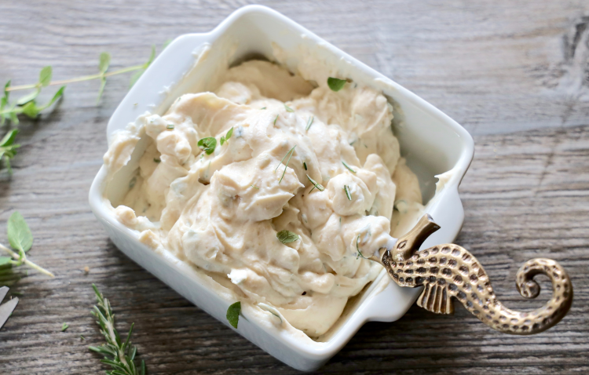

Mashed Potatoes

Photo by Megumi Nachev on Unsplash
Decription
One of my favorite methods of consuming the wonderful spud. Mashin' 'em up into smooth buttery goodness. Sure to please even the most descerning of Hobbits.
Ingredients
- 2 lbs red potatoes, scrubbed, quartered, and cut into small pieces
- 1/2 cup melted butter
- 1/2 cup half and half, hot
- 1 package Garlic and Fine Herbs Boursin cheese
- 1 Tbsp minced fresh chives
- Salt
Instructions
- Place the potatoes in a pot and cover with cold water. Bring to a boil and cook until potatoes are softened, 15 - 20 minutes. Drain well and return to the pot
- To the pot, add butter and mash until all potatoes are mostly broken up. Remove any potato skin if desired
- Add half-and-half and chives and continue mashing until desired consistency is reached. Mash in Boursin Cheese and salt to taste. Garnish with additional chives if desired
Recpie written by Culinary Hill